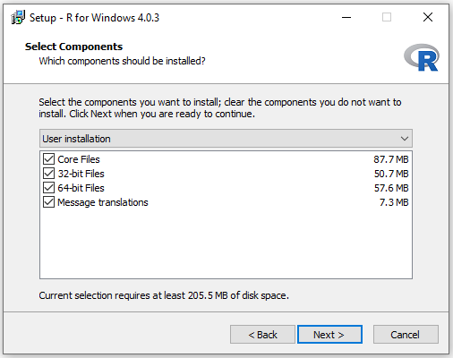
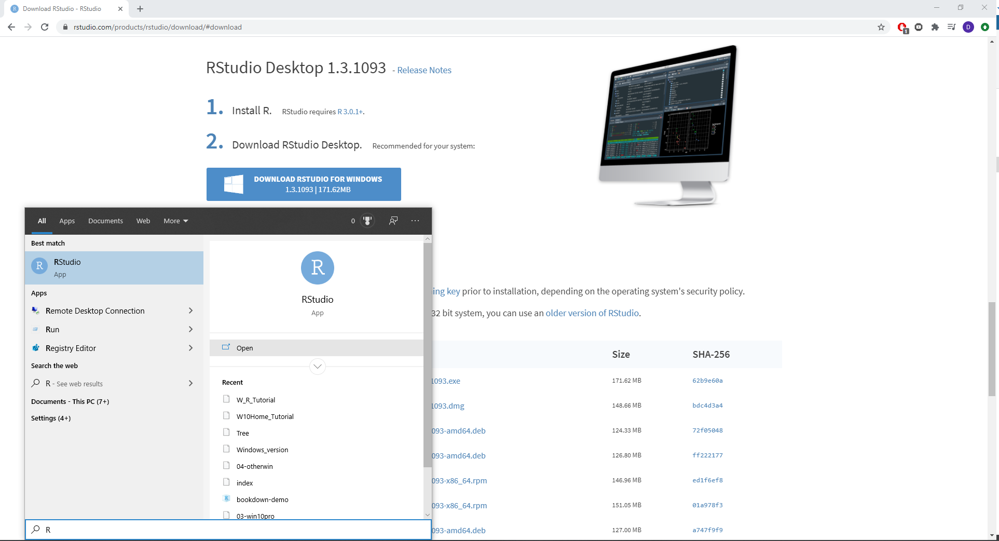

Windows 10 Home/pre-10
This guide covers the installation of R and RStudio on machines running Windows 10 Home Edition or versions of Windows prior to Windows 10 (e.g. Windows 7). With this approach, you will install R and RStudio “natively”, that is running directly on your operating system. If you are not sure what version of Windows you are running, check out this guide.
IMPORTANT:
If you are not sure what version of Windows you are running, check out this guide.
This module has been written using the most up-to-date versions of R, RStudio and relevant packages. To avoid software compatibility issues it is important you have these same versions installed on your home computer.
Therefore, if you have R or RStudio already installed on your computer, please uninstall them before following the instructions below
Download and Install R
Download R
R is the coding software that will execute the code you write in RStudio
NOTE: You need to install R before you install RStudio

- Open the R download page in your browser and click on Download R for Windows.

- Click on base (highlighted in red here) as you are installing R for the first time.

- Click on Download R 4.0.3 for Windows (highlighted in red here) to start the download.
Install R
- Navigate to your Downloads folder and double click on the R-4.0.3-win file.
NOTE: Once you double click on the file, a window might pop up that asks you if you want to allow this app to make changes to your device click YES to continue the installation
- A new window will pop up asking you to select a language for the installation. Select English and click OK.
- The next window shows the Terms and Conditions. Click Next to continue with the installation.
- The next window will ask you to specify where you would like to install R. Leave the default settings and click Next.

- The next window will ask you what components of R you want to install. Leave the default settings (all boxes ticked) and click Next.
- The next window will ask you if you want to customise the startup options.
- Select No and click Next.

- The next window will ask you to select/name a start menu folder.
- Leave the default settings (R) and click Next.

- The next window will ask you to select additional task that will be performed while installing R.
- Leave the default (Additional shortcuts unticked,Registry entries ticked) and click Next .

- R will now install.

- Once the installation is complete, click Finish.
Download and Install RStudio
Download RStudio
R-Studio is the R user interface in which you can code.

- Go to the R-studio download page.

- On the download page, scroll down and click on the Download button under RStudio Desktop.

- Click on Download RStudio for Windows to download the installation file
Install RStudio
- Navigate to your Downloads folder and double click on the RStudio-1.4.1103 file.
NOTE: Once you double click on the file, a window might pop up that asks you if you want to allow this app to make changes to your device click YES to continue the installation

- In the installation window that opens, click Next.

- In the next window, you can specify where you want to install RStudio.
- Leave the default settings and click Next.

- The next window will ask you to choose a Start Menu Folder.
- Leave the default settings (RStudio) and click Next.

- RStudio is now installing.

- Once the intallation is completed, click on Finish.
Open RStudio

- To open RStudio, click on the Windows logo in the left bottom corner of your screen and either type RStudio or look for the RStudio folder in the menu.
- Double click on Rstudio to open it.
Install Packages
Section on how to install relevant packages for Windows.
CONGRATULATIONS YOU HAVE NOW SUCCESFULLY INSTALLED R, RStudio AND ALL THE PACKAGES YOU NEED TO COMPLETE THE COURSE.
You can now start coding